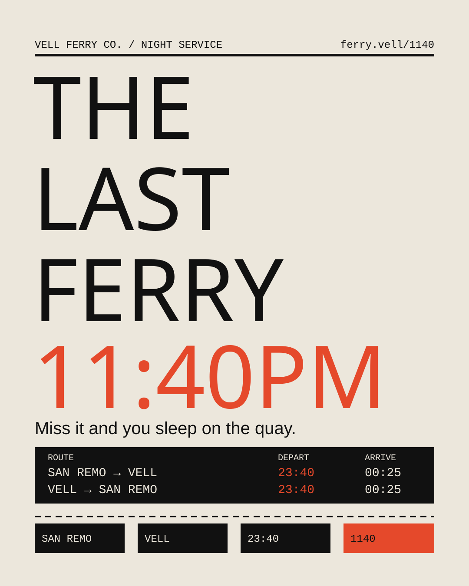

01 · Poster
prompt (thin)
Design a poster for "The Last Ferry, 11:40pm" — a late-night ferry crossing between two islands. Output: one SVG file, 1080 × 1350.
prompt (thick)
A poster for "The Last Ferry", the 11:40pm crossing between San Remo and the island of Vell. Output: one SVG file, 1080 × 1350. Must contain: the title, the time, both directions, one line of copy, and the URL `ferry.vell/1140`. Audience: night-shift workers, 24–40, urban and tired. It is seen on a phone at 11pm but printed at A2. Direction: two inks plus one paper tone. A condensed grotesque for the display, a monospace for the timetable block. Margins no tighter than 7% of the shorter edge. No imagery other than type and hard geometry. Avoid: gradients, drop shadows, faux paper texture, badges or stickers, stock photography, everything centred. Success: legible at phone size, unmistakably a schedule, and something a person would tear off a wall.


02 · Interface
prompt (thin)
Build the hero and one value section for Inkwell, a tool that turns handwritten notes into LaTeX. Output: one HTML file, 1440 × 900, no page scrolling.
prompt (thick)
Build the hero and one value section for Inkwell. Output: one HTML file, 1440 × 900, no page scrolling. What it is: you photograph a page of handwriting and get clean LaTeX back, with the original and the rendered output side by side. Must contain: the product name; a headline; one sentence explaining the conversion; three concrete capabilities — equations and tables handled, revision history per page, export to `.tex` or `.pdf`; a primary action "Try a page free"; a secondary action "See a real conversion". Audience: PhD students and researchers who already write LaTeX daily and distrust marketing pages. Direction: show the product rather than describe it — the hero must display a photograph of handwriting beside its rendered output, drawn with CSS or inline SVG. Use one serif for the headline and one grotesque for interface text. A muted, paper-like palette. Avoid: gradient hero, purple, centred hero with a blurred blob, three identical feature cards, emoji as icons, the words seamless / elevate / unlock, a fake "trusted by" logo strip. Success: at 1440 × 900 a researcher knows what it does within three seconds and has seen evidence it works.
03 · Critique
prompt (thin)
Here is a landing page I shipped. Critique it, then fix it. Output: one HTML
file at 1440 × 900, containing the improved page, with a note of at most 150
words in an HTML comment at the top explaining what you changed.
<!doctype html>
<html><head><meta charset="utf-8"><title>Ferryline — Book your crossing</title>
<style>
body{margin:0;font-family:Inter,system-ui,sans-serif;color:#111;background:#fff}
.hero{padding:120px 40px;text-align:center;background:linear-gradient(135deg,#7c3aed,#ec4899);color:#fff}
h1{font-size:56px;margin:0 0 16px}
p{font-size:20px;opacity:.9;max-width:640px;margin:0 auto 32px}
.cta{display:inline-block;padding:16px 32px;border-radius:999px;background:#fff;color:#7c3aed;font-weight:600;text-decoration:none}
.cards{display:grid;grid-template-columns:repeat(3,1fr);gap:24px;padding:80px 40px}
.card{border:1px solid #eee;border-radius:16px;padding:32px;background:#fafafa}
.card h3{margin:0 0 12px}
footer{padding:40px;text-align:center;color:#666;font-size:14px}
</style></head>
<body>
<section class="hero">
<h1>Book your crossing in seconds</h1>
<p>Ferryline connects you to the islands you love with a seamless, modern
booking experience that puts you first.</p>
<a class="cta" href="#">Get started</a>
</section>
<section class="cards">
<div class="card"><h3>Fast</h3><p>Book in under a minute with our streamlined flow.</p></div>
<div class="card"><h3>Simple</h3><p>No hidden fees, no surprises, just clear pricing.</p></div>
<div class="card"><h3>Reliable</h3><p>Thousands of travellers trust us every day.</p></div>
</section>
<footer>© Ferryline 2026 — All rights reserved</footer>
</body></html>prompt (thick)
Here is a landing page I shipped. Output: one HTML file at 1440 × 900,
containing the improved page, with a note of at most 150 words in an HTML
comment at the top.
Do three things, in this order:
1. Diagnose — the five most damaging problems, ordered by impact.
2. Fix — repair them in the page. Do not rebuild it from scratch; keep the
product, the structure and any copy that is defensible.
3. Record — in the note, list what you changed and what you deliberately left
alone.
Audience: ferry passengers booking on a phone, who do not care about the
brand.
You may rewrite copy only where it is vague or inflated. You may not add
sections the product does not have.
Avoid: replacing the page with a different generic landing page; removing
content to make the layout easier; fixing everything instead of the five that
matter.
Success: the same page, visibly better, and the priorities in your note match
the fixes actually made.
<!doctype html>
<html><head><meta charset="utf-8"><title>Ferryline — Book your crossing</title>
<style>
body{margin:0;font-family:Inter,system-ui,sans-serif;color:#111;background:#fff}
.hero{padding:120px 40px;text-align:center;background:linear-gradient(135deg,#7c3aed,#ec4899);color:#fff}
h1{font-size:56px;margin:0 0 16px}
p{font-size:20px;opacity:.9;max-width:640px;margin:0 auto 32px}
.cta{display:inline-block;padding:16px 32px;border-radius:999px;background:#fff;color:#7c3aed;font-weight:600;text-decoration:none}
.cards{display:grid;grid-template-columns:repeat(3,1fr);gap:24px;padding:80px 40px}
.card{border:1px solid #eee;border-radius:16px;padding:32px;background:#fafafa}
.card h3{margin:0 0 12px}
footer{padding:40px;text-align:center;color:#666;font-size:14px}
</style></head>
<body>
<section class="hero">
<h1>Book your crossing in seconds</h1>
<p>Ferryline connects you to the islands you love with a seamless, modern
booking experience that puts you first.</p>
<a class="cta" href="#">Get started</a>
</section>
<section class="cards">
<div class="card"><h3>Fast</h3><p>Book in under a minute with our streamlined flow.</p></div>
<div class="card"><h3>Simple</h3><p>No hidden fees, no surprises, just clear pricing.</p></div>
<div class="card"><h3>Reliable</h3><p>Thousands of travellers trust us every day.</p></div>
</section>
<footer>© Ferryline 2026 — All rights reserved</footer>
</body></html>04 · Motion
prompt (thin)
Animate the word DRIFT as an 8-second looping title card. Output: one HTML
file, 1280 × 720. Expose `window.__anim = { duration: 8, seek(t), play(), pause() }`
where `seek` is deterministic.prompt (thick)
Animate the word DRIFT as an 8-second looping title card. Output: one HTML
file, 1280 × 720. Expose `window.__anim = { duration: 8, seek(t), play(), pause() }`
where `seek(t)` renders the exact state at time t and is safe to call at any
point.
It is the title card for a short film about a ferry crossing at night.
Direction: the word must be legible at rest for at least two seconds of the
eight. Movement must be motivated — nothing moves without a reason in the
sequence. Use one typeface. Two colours maximum. Keep the loop's seam
invisible: the final frame must flow into the first.
Avoid: elastic or bounce eases, letter-by-letter fade-up, drop shadows, glow,
glitch or particle effects, white flash frames, motion that never settles.
Success: a viewer can describe the sequence as having a beginning, a middle and
an end, and cannot see where it loops.05 · Explanation
prompt (thin)
Explain how DNS works to someone who has never thought about it. 150 words maximum. Output: markdown.
prompt (thick)
Explain how DNS works to someone who has never thought about it. 150 words maximum, counting the title if you write one. Output: markdown. Audience: a smart adult, not technical, who has only ever seen DNS in an error message. Must cover: the problem it solves, what happens between typing an address and the page appearing, why answers are remembered, and what usually goes wrong. Every technical term must be glossed in plain words at its first use. You may use one analogy, once. A second analogy costs you the piece. Avoid: the phone book, the postal service, "imagine a", "in today's digital world", three-item lists used as padding, and em-dash chains. Success: a reader could retell it to a colleague in one sentence without getting it wrong.
# How DNS Works
Computers find each other using numbers called IP addresses, like `142.250.80.46`. Humans prefer names like `google.com`. **DNS (Domain Name System)** is the internet's phone book that translates names into numbers.
When you type a name into your browser, your computer asks a **DNS resolver** (usually run by your internet provider or a company like Google or Cloudflare) for the matching address. If the resolver doesn't already know it, it asks a chain of authoritative servers: first the root servers, then the server for the domain's extension (like `.com`), and finally the server that holds the domain's actual records.
The answer comes back as an IP address, which your computer caches for a while so the next lookup is faster. Then your browser connects to that address and loads the page.
# How DNS works
Computers find each other by number, like 93.184.216.34, but people prefer names like example.com. DNS (Domain Name System) is the lookup service that turns names into numbers.
When you type a name, your computer asks a resolver, a helper server usually run by your internet provider. The resolver checks a chain of servers: first those that handle the ending, such as ".com", then those that hold the exact name's entry, called a record. The record gives the number, and your browser connects to it.
Answers are remembered, a practice called caching, so repeat visits skip the chain. Each record has an expiry time, so changes eventually spread.
Things usually go wrong when a record is outdated, misspelled, or its server is down. Then the name fails to resolve, even though the site itself is fine.
06 · Fiction
prompt (thin)
Write a 100-word story containing a broken clock. No dialogue. Output: markdown.
prompt (thick)
Write a 100-word story, exactly 100 words, containing a clock that is wrong. No dialogue, no quoted speech. Output: markdown. Setting: a workplace after hours. Third person, limited to one character, who is not the narrator. The clock must earn its place — something in the story depends on it. Avoid: weather standing in for emotion, "a chill ran down", stacked similes, a twist in the last sentence, and any word you would only use in a story. Success: something has changed between the first sentence and the last, and the reader can say what.
The clock in the hallway stopped at 3:17 the winter Dana's father left. Nobody wound it after that. Dust settled on the brass pendulum, and the hands held their small, stubborn silence.
Every morning Dana walked past it on her way to the kitchen. Every morning she glanced up, expecting nothing, and found herself checking the time anyway.
Years passed. She moved out, moved back, moved on again.
Then one gray afternoon she climbed the stepladder, opened the glass, and gently nudged the pendulum.
Tick.
Tock.
The house, for the first time in years, began to breathe again.
Ruth had watched the break-room clock all evening long, waiting for it to say six. It ran nine minutes slow every day, a fact everyone knew and nobody bothered to fix, because payroll read the office server, not the wall. Her son's school bus came at six-fifteen, and she had promised, that evening, to be standing at the stop. For years she had let that clock decide when she could leave, and never once checked it against anything. Tonight she checked her phone, saw how late it really was, and ran for the stop without looking at the clock again.
07 · Build
prompt (thin)
Write `parseDuration('1h30m')` returning seconds, with tests. Output: one
`.mjs` file that runs its own tests with `node:test` when executed.prompt (thick)
Write `parseDuration` and its tests. Output: one `.mjs` file that runs its own tests with `node:test` when executed. Signature: `parseDuration(input)` → number, in seconds. Accepts: one or more `number + unit` segments concatenated, units `h`, `m`, `s`, case-insensitive, e.g. `"1h30m"`, `"90s"`, `"2h"`, `"1H2M3S"`. Segments may appear in any order. Each unit at most once. Integers only, no spaces. Rejects, by throwing `TypeError` with a useful message: empty string, unknown unit, repeated unit, bare number with no unit, negative numbers, non-string input. `"0s"` returns `0`. `"1h"` returns `3600`. No dependencies. No classes. No options object. At most 60 lines including tests. Tests must cover the happy paths, each rejection case, and one composite. Avoid: silently coercing invalid input, regex you cannot explain on a second read, an abstraction layer for three units. Success: a reviewer understands it in one pass, and the tests fail if the parser regresses.
import { test } from 'node:test';
import assert from 'node:assert/strict';
const UNIT_SECONDS = { d: 86400, h: 3600, m: 60, s: 1 };
export function parseDuration(input) {
if (typeof input !== 'string') throw new TypeError('duration must be a string');
const text = input.trim();
if (text === '') throw new SyntaxError('empty duration');
const part = /\s*(\d+(?:\.\d+)?)\s*([dhms])/iy;
const seen = new Set();
let total = 0;
let pos = 0;
while (pos < text.length) {
part.lastIndex = pos;
const match = part.exec(text);
if (!match) throw new SyntaxError(`invalid duration: ${JSON.stringify(input)}`);
const unit = match[2].toLowerCase();
if (seen.has(unit)) throw new SyntaxError(`duplicate unit "${unit}" in ${JSON.stringify(input)}`);
seen.add(unit);
total += Number(match[1]) * UNIT_SECONDS[unit];
pos = part.lastIndex;
}
return Math.round(total * 1000) / 1000;
}
test('parses a combined hours and minutes duration', () => {
assert.equal(parseDuration('1h30m'), 5400);
});
test('parses single units', () => {
assert.equal(parseDuration('90s'), 90);
assert.equal(parseDuration('2m'), 120);
assert.equal(parseDuration('1h'), 3600);
assert.equal(parseDuration('1d'), 86400);
});
test('parses all units together with whitespace', () => {
assert.equal(parseDuration('2h 15m 10s'), 8110);
assert.equal(parseDuration('1d 1h 1m 1s'), 90061);
assert.equal(parseDuration('1h 30m'), 5400);
});
test('parses decimal amounts', () => {
assert.equal(parseDuration('1.5h'), 5400);
assert.equal(parseDuration('0.5m'), 30);
});
test('accepts zero and uppercase units', () => {
assert.equal(parseDuration('0s'), 0);
assert.equal(parseDuration('1H30M'), 5400);
});
test('ignores surrounding whitespace', () => {
assert.equal(parseDuration(' 1h30m '), 5400);
});
test('accepts units in any order', () => {
assert.equal(parseDuration('30m1h'), 5400);
});
test('rejects empty and whitespace-only input', () => {
assert.throws(() => parseDuration(''), SyntaxError);
assert.throws(() => parseDuration(' '), SyntaxError);
});
test('rejects numbers without a unit', () => {
assert.throws(() => parseDuration('30'), SyntaxError);
assert.throws(() => parseDuration('1h30'), SyntaxError);
});
test('rejects unknown units and garbage', () => {
assert.throws(() => parseDuration('abc'), SyntaxError);
assert.throws(() => parseDuration('1x'), SyntaxError);
assert.throws(() => parseDuration('1h foo'), SyntaxError);
});
test('rejects negative values', () => {
assert.throws(() => parseDuration('-5m'), SyntaxError);
});
test('rejects duplicate units', () => {
assert.throws(() => parseDuration('1h1h'), SyntaxError);
});
test('rejects non-string input', () => {
assert.throws(() => parseDuration(90), TypeError);
assert.throws(() => parseDuration(null), TypeError);
});
import { test } from 'node:test';
import assert from 'node:assert/strict';
const UNIT_SECONDS = { h: 3600, m: 60, s: 1 };
export function parseDuration(input) {
if (typeof input !== 'string') {
throw new TypeError(`parseDuration expects a string, got ${typeof input}`);
}
if (input === '') throw new TypeError('parseDuration: empty string');
const segment = /(\d+)([hms])/iy;
const seen = new Set();
let total = 0;
while (segment.lastIndex < input.length) {
const pos = segment.lastIndex;
const match = segment.exec(input);
if (!match) {
throw new TypeError(`parseDuration: expected number + h/m/s at position ${pos} in "${input}"`);
}
const unit = match[2].toLowerCase();
if (seen.has(unit)) throw new TypeError(`parseDuration: unit "${unit}" repeated in "${input}"`);
seen.add(unit);
total += Number(match[1]) * UNIT_SECONDS[unit];
}
return total;
}
test('happy paths', () => {
assert.equal(parseDuration('0s'), 0);
assert.equal(parseDuration('90s'), 90);
assert.equal(parseDuration('1h'), 3600);
assert.equal(parseDuration('2h'), 7200);
});
test('composite segments, any order, any case', () => {
assert.equal(parseDuration('1h30m'), 5400);
assert.equal(parseDuration('1H2M3S'), 3723);
assert.equal(parseDuration('3s2h1m'), 7263);
});
test('rejects empty string', () => {
assert.throws(() => parseDuration(''), TypeError);
});
test('rejects unknown unit', () => {
assert.throws(() => parseDuration('5d'), TypeError);
});
test('rejects repeated unit', () => {
assert.throws(() => parseDuration('1h1h'), TypeError);
assert.throws(() => parseDuration('1m2M'), TypeError);
});
test('rejects bare number with no unit', () => {
assert.throws(() => parseDuration('90'), TypeError);
assert.throws(() => parseDuration('1h30'), TypeError);
});
test('rejects negative numbers', () => {
assert.throws(() => parseDuration('-5m'), TypeError);
});
test('rejects spaces and non-integers', () => {
assert.throws(() => parseDuration('1h 30m'), TypeError);
assert.throws(() => parseDuration('1.5h'), TypeError);
});
test('rejects non-string input', () => {
assert.throws(() => parseDuration(90), TypeError);
assert.throws(() => parseDuration(null), TypeError);
assert.throws(() => parseDuration(undefined), TypeError);
});
08 · Code review
prompt (thin)
Review this code. Comments only — do not rewrite it. Output: markdown.
export function createLimiter({ limit = 10, windowMs = 1000, now = () => Date.now() } = {}) {
const hits = [];
function prune(t) {
while (hits.length && hits[0] < t - windowMs) hits.shift();
}
return {
allow(key) {
const t = now();
prune(t);
const n = hits.filter(h => h.key === key).length;
if (n >= limit) return false;
hits.push({ key, time: t });
return true;
},
reset(key) {
for (let i = 0; i < hits.length; i++) {
if (hits[i].key === key) hits.splice(i, 1);
}
}
};
}prompt (thick)
Review this code. Comments only — do not rewrite it. Output: markdown.
Format each finding on one line:
`[severity] location — problem — why it matters — suggested direction`
Severity is one of `blocker`, `major`, `minor`, `nit`. Order by severity.
Cover correctness first, then performance, then API design, then tests.
Do not summarise what the code does. Do not praise. Do not suggest a rewrite.
Maximum eight findings — if you find more, keep the eight that matter.
Success: a maintainer could fix every blocker using only your comments.
export function createLimiter({ limit = 10, windowMs = 1000, now = () => Date.now() } = {}) {
const hits = [];
function prune(t) {
while (hits.length && hits[0] < t - windowMs) hits.shift();
}
return {
allow(key) {
const t = now();
prune(t);
const n = hits.filter(h => h.key === key).length;
if (n >= limit) return false;
hits.push({ key, time: t });
return true;
},
reset(key) {
for (let i = 0; i < hits.length; i++) {
if (hits[i].key === key) hits.splice(i, 1);
}
}
};
}## Review: `createLimiter`
### Bugs
1. **`prune` never removes anything.** `hits` holds `{ key, time }` objects, but `prune` compares `hits[0]` directly to a number. The object coerces to `NaN`, so `NaN < t - windowMs` is always false. Use `hits[0].time`.
2. **Once a key hits the limit, it is blocked permanently.** Because pruning is broken, old timestamps stay in `hits` forever. `allow` keeps counting them, so `n >= limit` stays true until `reset(key)` is called. This is the most serious problem: the limiter behaves like a lifetime quota, not a sliding window.
3. **Unbounded memory growth.** Every allowed call pushes an entry that is never removed, so `hits` grows without limit.
4. **`reset` skips entries.** `splice(i, 1)` inside a forward `for` loop shifts the next element into index `i`, then `i++` skips it. Two consecutive matching entries means the second survives. Iterate backwards, or rebuild the array with `filter`, e.g. `hits = hits.filter(h => h.key !== key)`. Note that `hits` is `const` in this case, so mutate it in place or change the declaration to `let`.
### Design issues
5. **Shared global array makes everything O(n).** `prune` runs on every call and `shift()` is O(n). `allow` then does a full `filter` over all keys to count one key. A `Map` from key to an array of timestamps (or a queue with a head index) gives per-key work proportional only to that key's hits.
6. **Keys leak.** Even after the fix, a `Map` keeps an entry for every key ever seen. Delete a key's entry when its timestamps are all pruned, or prune stale keys periodically.
7. **Clock assumptions.** Pruning assumes `now()` is monotonic. If the injected clock moves backwards, `t - windowMs` moves backwards too and old hits are kept longer than intended. Consider `Math.max` against the last seen time, or document the requirement.
8. **No input validation.** `limit <= 0` silently rejects every request. `windowMs <= 0` or non-numeric values produce confusing behavior. Validate the options and throw a clear error, or document the accepted range.
### Minor
9. `allow` is O(n) per call because of `filter`. This is covered by item 5 but is worth noting separately for the hot path.
10. There are no tests covering the window boundary (`t - windowMs` exactly), the limit being reached, or recovery after the window passes. A test that advances a fake `now()` past `windowMs` would have caught bug 1 immediately.
[blocker] `prune`, `hits[0] < t - windowMs` — `hits[0]` is a `{ key, time }` object, so the comparison against a number is always false and nothing is ever pruned. Once a key has made `limit` calls in total, `allow` returns false forever regardless of `windowMs`, and the array grows without bound. Compare `hits[0].time` instead.
[major] `reset`, `hits.splice(i, 1)` followed by `i++` — the entry that shifts into the removed slot is skipped, so consecutive matching entries survive. `reset(key)` silently leaves some of that key's hits behind. Iterate backwards or filter in place.
[major] `allow`, `hits.filter(h => h.key === key)` — every call scans the hits for all keys, so cost grows with total traffic rather than with that key's usage. Keep a per-key timestamp queue in a `Map` so counting and pruning touch only the relevant key.
[major] `prune`, `hits.shift()` — `shift` is O(n) on arrays and runs once per expired entry, and `reset`'s `splice` is also O(n) per removal. Under load this is quadratic. Use a head index or per-key queues.
[minor] `createLimiter` options — `limit`, `windowMs` and `now` are not validated. `limit: 0`, negative values, `NaN`, or a non-function `now` are accepted silently and produce always-deny or never-expire behaviour. Validate at construction and throw.
[minor] `allow` return value — it returns a bare boolean, so callers cannot set `Retry-After` or `X-RateLimit-Remaining` without re-implementing the window math. Return a result object (allowed, remaining, reset time) or expose a separate query method.
[minor] Tests — none are included, and a single test that advances the injected `now` past `windowMs` would have caught the blocker above. Add tests for window expiry, per-key isolation, and `reset` on consecutive keys.
[nit] `prune`, `< t - windowMs` — a hit exactly `windowMs` old still counts, so the effective window is inclusive at one boundary. Decide on the intended semantics and document it.